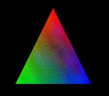

En el model d'il·luminació d'OpenGL, la llum en una escena prové de diferents fonts de llum que poden ser activades o desactivades individualment. Algunes fonts de llum provenen d'una direcció o posició determinada mentre que d'altres són distribuïdes uniformement en l'escena.
OpenGL aproxima la llum o la il·luminació com si la llum estigués dividida en components de vermell, verd i blau. Per tant el color de les fonts de llum es caracteritza per la quantitat de vermell, verd i blau que emeten, i el material de les superfícies es caracteritza pel percentatge de les components de vermell, verd i blau que són reflectides en varies direccions.
Les components del color signifiquen coses diferents quan s'especifiquen per a llums o per a materials. Per a una llum, els valors corresponen al percentatge d'intensitat per a cada color. Per a materials, els valors corresponen a les proporcions reflectides dels respectius colors. És a dir, si R=1, G=0.5 i B=0 per a un material, aquest material reflecteix tot el vermell, la meitat del verd i res de blau.
Per a utilitzar il·luminació en OpenGL es requereix seguir els següents punts:
Es poden incloure fins a vuit fonts de llum diferents en una escena OpenGL i de diferents colors. La comanda per a especificar totes les propietats d'una font de llum és:
void glLight{if}[v] (GLenum light, GLenum property,
TYPE param)
GLfloat light_ambient[] = {0.0, 0.0, 0.0, 1.0};
glLightfv (GL_LIGHT0, GL_AMBIENT, light_ambient);
GLfloat light_difuse[] = {1.0, 1.0, 1.0, 1.0};
glLightfv (GL_LIGHT0, GL_DIFFUSE, light_difuse);
GLfloat light_specular[] = {1.0, 1.0, 1.0, 1.0};
glLightfv (GL_LIGHT0, GL_SPECULAR, light_specular);
GLfloat light_position[] = {0.0, 0.0, 1.0, 0.0};
glLightfv (GL_LIGHT0, GL_POSITION, light_position);
En OpenGL una font de llum també està subjecte a les transformacions corresponents marcades per les matrius de transformació de la mateixa manera que una primitiva. És a dir, es pot manipular la posició o direcció d'una font de llum canviant el contingut de la matriu MODELVIEW (la matriu PROJECTION no té efecte sobre la posició o direcció de les fonts de llum). Això vol dir que segons el punt del codi on activem la posició de la font de llum podem aconseguir efectes diferents:
Spotlights. Hi ha dos tipus de llums posicionals: omnidireccional (per defecte) i spotlight. En un spotlight el que abarca la llum des del focus es restringeix a un con. Per defecte aquesta característica no està activada. Les següents propietats defineixen un spotlight:
GLfloat direction[] = {0.0, 0.0, -1.0};
glLightfv (GL_LIGHT0, GL_SPOT_DIRECTION, direction);
glLightfv (GL_LIGHT0, GL_SPOT_CUTOF, 45.0);
glLightfv (GL_LIGHT0, GL_SPOT_EXPONENT, 0.0);
Atenuació. La intensitat de llum decreix a mesura que la distància a la font de llum creix. Per a llums direccionals no té sentit, però es pot voler atenuació per a llums posicionals. OpenGL atenua una font de llum multiplicant la contribució d'aquesta llum pel factor d'atenuació següent:
| factor = 1 / (kc+dk1+d2kq) |
Cada font de llum pot ser activada o desactivada individualment. Per a activar-la cal usar la crida a "glEnable" que ja haviem vist. El paràmetre en aquest cas haurà de ser la font de llum corresponent que volguem activar:
glEnable (GL_LIGHT0);
El model d'il·luminació es defineix mitjançant la crida a "glLightModel*". El seu prototipus és:
void glLightModelf (GLenum pname, GLfloat param);
void glLightModeli (GLenum pname, GLint param);
void glLightModelfv (GLenum pname, const GLfloat *params);
void glLightModeliv (GLenum pname, const GLint *params);
pname especifica un paràmetre del model d'il·luminació. Els possibles valors són: GL_LIGHT_MODEL_AMBIENT, GL_LIGHT_MODEL_LOCAL_VIEWER, GL_LIGHT_MODEL_TWO_SIDE i GL_LIGHT_MODEL_COLOR_CONTROL; param especifica el valor que se li vol donar; i params especifica un punter al vector de valors que es volen donar.
Veiem diferents casos en que l'ús d'aquesta crida pot ser d'utilitat:
GLfloat lmodel_ambient[] = {0.2, 0.2, 0.2, 1.0};
glLightModelfv (GL_LIGHT_MODEL_AMBIENT, lmodel_ambient);
glLightModeli (GL_LIGHT_MODEL_LOCAL_VIEWER, GL_TRUE);
Aquesta crida posa el punt de visió al (0,0,0) en coordenades de
l'observador. Per a tornar-ho a canviar a punt de visió a l'infinit
només cal cridar-la amb valor GL_FALSE com a argument.
glLightModeli (GL_LIGHT_MODEL_LOCAL_VIEWER, GL_TRUE);
OpenGL inverteix les normals d'aquests polígons que eren d'esquena a
l'observador fent que ara estiguin de cara. Així el vector normal té
una component de direcció cap a l'observador i el polígon s'il·lumina
correctament.
glLightModeli (GL_LIGHT_MODEL_COLOR_CONTROL,
GL_SEPARATE_SPECULAR_COLOR);
OpenGL separa el càlcul del color especular de l'aplicació. Després
d'aquesta crida, la il·luminació produeix dos colors per vèrtex: un
color primari que conté totes les contribucions no especulars, i un
color secundari que és la suma de totes les contribucions
especulars. Durant el mapejat de textures, només el color primari es
combina amb el color de la textura. Després de l'operació de textura,
s'afegeix el color secundari a la combinació resultant del color
primari i el color de textura. Els objectes que es texturen usant un
color especular separat, normalment tenen reflexes (highlights)
més visibles. Per a restaurar la situació per defecte cal fer la crida:
glLightModeli (GL_LIGHT_MODEL_COLOR_CONTROL,
GL_SINGLE_COLOR);
Si no s'està usant mapejat de textures, no hi ha cap raó per a separar
el color especular de la resta de components.
En OpenGL la il·luminació ha de ser explícitament activada (o desactivada). Si la il·luminació no està activada el color actual es mapeja en el vèrtex directament sense fer cap càlcul que tingui a veure amb normals, fonts de llum, model d'il·luminació o propietats del material. Per a activar la il·luminació farem:
glEnable (GL_LIGHTING);
I per a desactivar-la cridarem amb el mateix paràmetre a "glDisable".
 Una línia o un polígon es pot pintar amb un únic color (flat shading) o amb molts colors diferents (smooth shading també nomenat Gouraud shading). Per defecte, OpenGL pinta amb colors diferents i per tant es poden aconseguir efectes com el del triangle de la figura, que simplement té assignat un color diferent (vermell, verd i blau) a cada vèrtex del polígon. OpenGL ens permet escollir entre aquestes dues modalitats utilitzant la rutina
void glShadeModel (GLenum mode);
Les normals d'un objecte determinen la seva orientació relativa a les fonts de llum. Per a cada vèrtex OpenGL utilitza la normal assignada a aquest vèrtex per a determinar la quantitat de llum que rep el vèrtex en particular de cada font de llum.
Per a assignar la normal a un vèrtex s'usa la crida a la rutina
void glNormal3{bdfis} (TYPE coords);
Per exemple:
glNormal3f (1.0, 0.0, 0.0);
Igual que pasa amb les llums, els materials tenen diferents colors ambient, difosos i especulars que determinen les reflectàncies ambient, difoses i especulars del material. Una reflectància ambient del material es combina amb la component ambient de cada font de llum que li arriba, la reflectància difosa amb les components difoses, i similarment per a la reflectància especular.
Les propietats dels materials dels objectes són: el color ambient, difós i especular, la brillantor i el color de qualsevol llum emesa. El mecanisme per a donar valors a aquestes propietats passa per usar la rutina
void glMaterial{if}[v] (GLenum face, GLenum pname,
TYPE param)
Aquesta rutina especifica una propietat del material actual per a ser usada en els càlculs d'il·luminació. El paràmetre face pot tenir valors GL_FRONT, GL_BACK o GL_FRONT_AND_BACK per a indicar a quina cara de l'objecte ha de ser aplicat el material.
La propietat del material a la que se li dona valor és pname i el valor desitjat es dona en param, que pot ser un punter a un grup de valors (per a la versió de vector) o el valor.
GLfloat mat_anb_diff[] = {0.1, 0.5, 0.8, 1.0};
glMaterialfv (GL_FRONT_AND_BACK, GL_AMBIENT_AND_DIFFUSE,
mat_anb_diff);
En aquest exemple el color RGBA (0.1,0.5,0.8,1.0) representa la
reflectància ambient i difosa actual dels polígons de davant i el de
darrera.
Normalment es tenen diferents objectes en una escena i es vol que cada objecte sigui d'un material diferent, i per tant tingui diferents propietats.
Es pot cridar repetidament a la rutina "glMaterial*" per a posar les propietats a cada objecte, però això té un cost elevat i és bo intentar minimitzar els canvis de material-propietat. Una tècnica per a minimitzar el cost de canviar propietats de materials és usar la rutina
void glColorMaterial (GLenum face, GLenum mode)
Aquesta rutina provoca que la o les propietats especificades per mod de la o les cares especificades per face prenguin el valor del color actual sempre. Un canvi al color actual provoca un canvi al d'aquests materials. El paràmetre fac pot ser GL_FRONT, GL_BACK o GL_FRONT_AND_BACK (per defecte). El paràmetre mode pot ser GL_AMBIENT, GL_DIFFUSE, GL_AMBIENT_AND_DIFFUSE, GL_SPECULAR o GL_EMISSION. En aquest últim cas el valor per defecte és GL_AMBIENT_AND_DIFFUSE.
Després de cridar a "glColorMaterial" cal cridar a
glEnable (GL_COLOR_MATERIAL);
En l'apartat de Materials i
il·luminació que s'explica a la part de tècniques bàsiques
d'OpenGL al capítol 10 ("El pipeline de visualització d'OpenGL"), hi
ha una taula amb els valors de les components d'un cert conjunt de
materials.